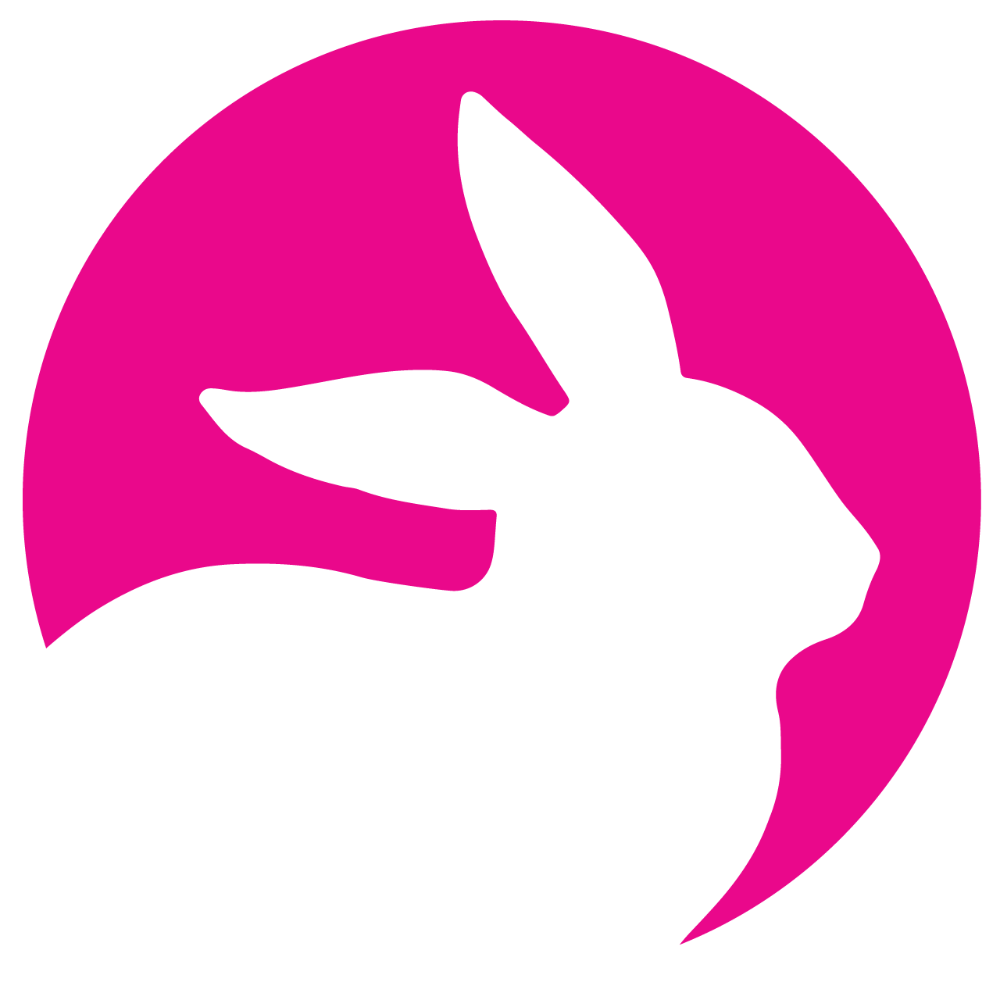
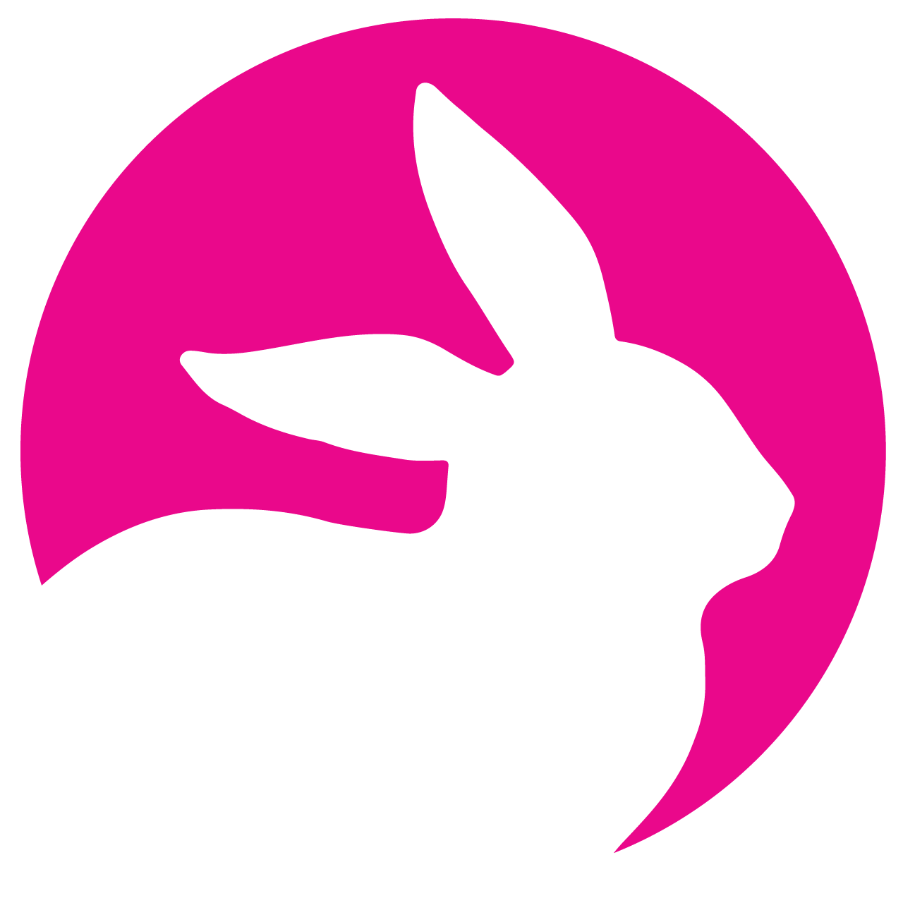

Works

In a team of 3, including myself, we were tasked to create and design a social awareness campaign from scratch on a social issue prevalent to today’s society.
As a team, we decided to do our social awareness campaign to encourage people, specifically female makeup users ages 18-30, to switch to using and purchasing cruelty-free makeup as a protest to stop cruel animal testing practices in the cosmetic industry.
We each did two case studies on two different social awareness campaigns on going cruelty-free when choosing cosmetics and supporting cruelty-free cosmetics practices to understand how the cosmetic industry worked and the history of makeup
testing on animals more thoroughly to make our campaign as strong and factual as possible.
As a team, we wanted to make a clean, modern, and sophisticated logo with a feminine touch to it while keeping it still gender neutral and professional.
We chose to use a bunny as the mascot/iconic figure of our logo because in our research, we found that the image of a bunny was not only one of the animals most tested with cosmetics, but the image of a bunny is also commonly used to
represent a cruelty-free brand or product on makeup packaging already. We made a neutral silhouette of a bunny different from the current existing bunny logos and placed it on top of a magenta background. Magenta would be the color of our campaign
as we felt that it was a strong and bright color that people would indefinitely correlate with the idea of makeup. We made our icon circular as well to represent the idea of a mirror in makeup compact and the idea of self-reflection.
We decided to name our campaign “Cosmetic Consciousness” as we were asking consumers of makeup to be conscious of their cosmetic choices.
We used the font Josepfin Sans after a quick type study. We found Josefin Sans best represented our vision above and our circular icon for the logo.
The business system consists of a custom designed envelope, letter, business cards, and a brochure.
Marketing system consists of a billboards, bus shelters, posters, flyers, website, stickers, t-shirts, and custom makeup bags with any bonus swag and coupons from sponsors.
We chose to incorporate photography of makeup products similar to what you’d see in high fashion and makeup advertisements and our color and font schemes to the rest of our campaign, creating a cohesive look for our entire campaign.
Read more about Cosmetic Consciousness below!
Cosmetic Consciousness Process Manual:
Cosmetic Consciousness Graphic Standard: